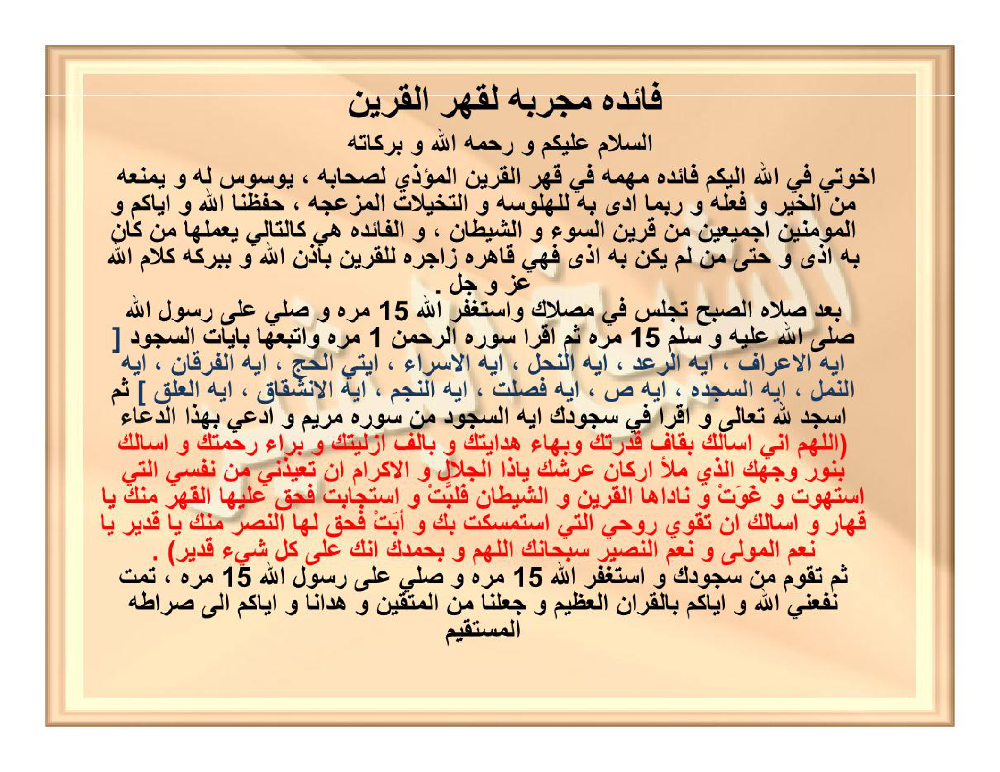

HALAMAN 21 — FĀIDAH MUJARRABAH LI-QAHRIL-QARĪN — فَائِدَةٌ مُجَرَّبَةٌ لِقَهْرِ الْقَرِينِ
arab
فَائِدَةٌ مُجَرَّبَةٌ لِقَهْرِ الْقَرِينِ
السَّلَامُ عَلَيْكُمْ وَرَحْمَةُ اللهِ وَبَرَكَاتُهُ
إِخْوَتِي فِي اللهِ، إِلَيْكُمْ فَائِدَةٌ مُهِمَّةٌ فِي قَهْرِ الْقَرِينِ الْمُؤْذِي لِصَاحِبِهِ، يُوَسْوِسُ لَهُ وَيَمْنَعُهُ مِنَ الْخَيْرِ وَفِعْلِهِ وَرُبَّمَا أَدَّى بِهِ لِلْهَلْوَسَةِ وَالتَّخَيُّلَاتِ الْمُزْعِجَةِ، حَفِظَنَا اللهُ وَإِيَّاكُمْ وَالْمُؤْمِنِينَ أَجْمَعِينَ مِنْ قَرِينِ السُّوءِ وَالشَّيْطَانِ، وَالْفَائِدَةُ هِيَ كَالتَّالِي يَعْمَلُهَا مَنْ كَانَ بِهِ أَذًى وَحَتَّى مَنْ لَمْ يَكُنْ بِهِ أَذًى فَهِيَ قَاهِرَةٌ زَاجِرَةٌ لِلْقَرِينِ بِإِذْنِ اللهِ وَبِبَرَكَةِ كَلَامِ اللهِ عَزَّ وَجَلَّ
بَعْدَ صَلَاةِ الصُّبْحِ تَجْلِسُ فِي مُصَلَّاكَ وَاسْتَغْفِرِ اللهَ ١٥ مَرَّةً وَصَلِّ عَلَى رَسُولِ اللهِ صَلَّى اللهُ عَلَيْهِ وَسَلَّمَ ١٥ مَرَّةً، ثُمَّ اقْرَأْ سُورَةَ الرَّحْمٰنِ ١ مَرَّةً وَأَتْبِعْهَا بِآيَاتِ السَّجْدَةِ [آيَةُ الْأَعْرَافِ، آيَةُ الرَّعْدِ، آيَةُ النَّحْلِ، آيَةُ الْإِسْرَاءِ، آيَتَا الْحَجِّ، آيَةُ الْفُرْقَانِ، آيَةُ النَّمْلِ، آيَةُ السَّجْدَةِ، آيَةُ ص، آيَةُ فُصِّلَتْ، آيَةُ النَّجْمِ، آيَةُ الْإِنْشِقَاقِ، آيَةُ الْعَلَقِ]، ثُمَّ اسْجُدْ لِلّٰهِ تَعَالَى وَاقْرَأْ فِي سُجُودِكَ آيَةَ السَّجْدَةِ مِنْ سُورَةِ مَرْيَمَ وَادْعُ بِهٰذَا الدُّعَاءِ
[اللَّهُمَّ إِنِّي أَسْأَلُكَ بِقَافِ قُدْرَتِكَ وَبِهَاءِ هِدَايَتِكَ وَبِأَلِفِ أَزَلِيَّتِكَ وَبِرَاءِ رَحْمَتِكَ وَأَسْأَلُكَ بِنُورِ وَجْهِكَ الَّذِي مَلَأَ أَرْكَانَ عَرْشِكَ يَا ذَا الْجَلَالِ وَالْإِكْرَامِ أَنْ تُعِيذَنِي مِنْ نَفْسِيَ الَّتِي اسْتَهْوَتْ وَغَوَتْ وَنَادَاهَا الْقَرِينُ وَالشَّيْطَانُ فَلَبَّتْ وَاسْتَجَابَتْ فَحَقَّ عَلَيْهَا الْقَهْرُ مِنْكَ يَا قَهَّارُ وَأَسْأَلُكَ أَنْ تُقَوِّيَ رُوحِيَ الَّتِي اسْتَمْسَكَتْ بِكَ وَأَبَتْ فَحَقَّ لَهَا النَّصْرُ مِنْكَ يَا قَدِيرُ يَا نِعْمَ الْمَوْلَى وَنِعْمَ النَّصِيرُ سُبْحَانَكَ اللَّهُمَّ وَبِحَمْدِكَ إِنَّكَ عَلَى كُلِّ شَيْءٍ قَدِيرٌ]
ثُمَّ تَقُومُ مِنْ سُجُودِكَ وَاسْتَغْفِرِ اللهَ ١٥ مَرَّةً وَصَلِّ عَلَى رَسُولِ اللهِ ١٥ مَرَّةً
تَمَّتْ، نَفَعَنِي اللهُ وَإِيَّاكُمْ بِالْقُرْآنِ الْعَظِيمِ وَجَعَلَنَا مِنَ الْمُتَّقِينَ وَهَدَانَا وَإِيَّاكُمْ إِلَى صِرَاطِهِ الْمُسْتَقِيمِ
latin
Fāidatun mujarrabatun li-qahril-qarīn.
As-salāmu 'alaikum wa rahmatullāhi wa barakātuh.
Ikhwatī fillāhi, ilaikum fāidatun muhimmatun fī qahril-qarīnil-mu'dzī li-shāhibihi, yuwaswisu lahū wa yamna'uhū minal-khairi wa fi'lihi wa rubbamā addā bihi lil-halwasati wat-takhayyulātil-muz'ijati, hafizhanallāhu wa iyyākum wal-mu'minīna ajma'īna min qarīnis-sū'i wasy-syaithāni, wal-fāidatu hiya kat-tālī ya'maluhā man kāna bihi adzan wa hattā man lam yakun bihi adzan fa-hiya qāhiratun zājiratun lil-qarīni bi-idznillāhi wa bi-barakati kalāmillāhi 'azza wa jalla:
Ba'da shalātish-shubhi tajlisu fī mushallāka wastaghfirillāha 15 marratan wa shalli 'alā rasūlillāhi shallallāhu 'alaihi wa sallama 15 marratan, tsummaqra' sūratar-rahmāni 1 marratan wa atbi'hā bi-āyātis-sajdati [āyatul-a'rāfi, āyatur-ra'di, āyatun-nahli, āyatul-isrā'i, āyatayil-hajji, āyatul-furqāni, āyatun-namli, āyatus-sajdati, āyatu shād, āyatu fushshilat, āyatun-najmi, āyatul-insyiqāqi, āyatul-'alaqi], tsummasjud lillāhi ta'ālā waqra' fī sujūdika āyat-as-sajdati min sūrati maryama wad'u bihādzad-du'ā'i:
[Allāhumma innī as'aluka bi-qāfi qudratika wa bi-bahā'i hidāyatika wa bi-alifi azaliyyatika wa bi-rā'i rahmatika wa as'aluka bi-nūri wajhikal-ladzī mala'a arkāna 'arsyika yā dzal-jalāli wal-ikrāmi an tu'īdzanī min nafsiyal-latīs-tahwat wa ghawat wa nādāhal-qarīnu wasy-syaithānu fa-labbāt wastajābāt fa-haqqa 'alaihal-qahru minka yā qahhāru wa as'aluka an tuqawwiya rūhiyal-latīs-tamsakat bika wa abat fa-haqqa lahan-nashru minka yā qadīru yā ni'mal-maulā wa ni'man-nashīru subhānakallāhumma wa bi-hamdika innaka 'alā kulli syai'in qadīr].
Tsumma taqūmu min sujūdika wastaghfirillāha 15 marratan wa shalli 'alā rasūlillāhi 15 marratan.
Tammat. Nafa'aniyallāhu wa iyyākum bil-qur'ānil-'azhīmi wa ja'alana minal-muttaqīna wa hadānā wa iyyākum ilā shirāthihil-mustaqīm.
Terjemahan
Faedah yang teruji untuk menundukkan qarin.
Assalamu'alaikum warahmatullahi wabarakatuh.
Wahai saudara-saudaraku karena Allah, aku sampaikan kepada kalian faedah penting untuk menundukkan qarin yang mengganggu pemiliknya; ia membisikkan was-was kepadanya dan menghalanginya dari kebaikan serta perbuatannya, dan terkadang menyeretnya kepada halusinasi dan khayalan-khayalan yang mengganggu. Semoga Allah menjaga kami dan kalian serta seluruh kaum mukminin dari qarin yang buruk dan dari setan. Adapun faedah tersebut ialah sebagai berikut — diamalkan oleh siapa pun yang mengalami gangguan maupun yang tidak mengalami gangguan — maka ia bersifat menundukkan dan mencegah qarin dengan izin Allah dan dengan keberkahan kalam Allah azza wa jalla:
Setelah salat Subuh, duduklah di tempat salatmu; mohon ampunlah kepada Allah 15 kali dan bershalawatlah kepada Rasulullah shallallahu 'alaihi wa sallam 15 kali, kemudian bacalah Surah ar-Rahman 1 kali dan ikutilah dengan ayat-ayat sajdah [ayat al-A'raf, ayat ar-Ra'd, ayat an-Nahl, ayat al-Isra', dua ayat al-Hajj, ayat al-Furqan, ayat an-Naml, ayat as-Sajdah, ayat Shad, ayat Fushshilat, ayat an-Najm, ayat al-Insyiqaq, ayat al-'Alaq], kemudian bersujudlah kepada Allah ta'ala dan bacalah dalam sujudmu ayat sajdah dari Surah Maryam serta berdoalah dengan doa ini:
[Ya Allah, sesungguhnya aku memohon kepada-Mu dengan qaf kekuasaan-Mu, dengan ha' petunjuk-Mu, dengan alif keabadian-Mu, dan dengan ra' kasih sayang-Mu; dan aku memohon kepada-Mu dengan cahaya wajah-Mu yang memenuhi pilar-pilar Arasy-Mu, wahai Pemilik keagungan dan kemuliaan, agar Engkau melindungiku dari nafsuku yang telah condong kepada hawa nafsu dan tersesat, yang telah diseru oleh qarin dan setan lalu ia memenuhi dan menaatinya sehingga ia berhak mendapat penundukan dari-Mu wahai Yang Maha Menundukkan; dan aku memohon kepada-Mu agar Engkau menguatkan ruhku yang berpegang teguh kepada-Mu dan enggan (mengikuti bisikan) sehingga ia berhak mendapat pertolongan dari-Mu wahai Yang Maha Kuasa, wahai sebaik-baik Pelindung dan sebaik-baik Penolong. Maha Suci Engkau ya Allah dan dengan memuji-Mu, sesungguhnya Engkau Maha Kuasa atas segala sesuatu].
Kemudian bangkitlah dari sujudmu; mohon ampunlah kepada Allah 15 kali dan bershalawatlah kepada Rasulullah 15 kali.
Selesai. Semoga Allah memberi manfaat kepada kami dan kalian dengan al-Qur'an yang agung, menjadikan kami termasuk orang-orang yang bertakwa, dan memberi petunjuk kepada kami dan kalian kepada jalan-Nya yang lurus.

[Gambar: HALAMAN 21 — FĀIDAH MUJARRABAH LI-QAHRIL-QARĪN — فَائِدَةٌ مُجَرَّبَةٌ لِقَهْرِ الْقَرِينِ]